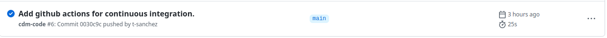
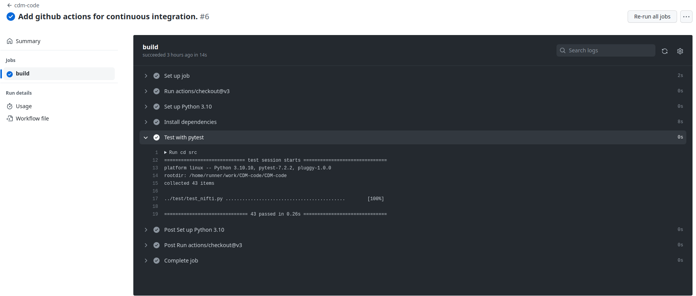
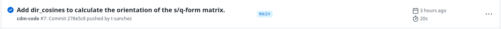
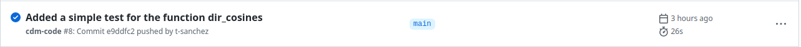
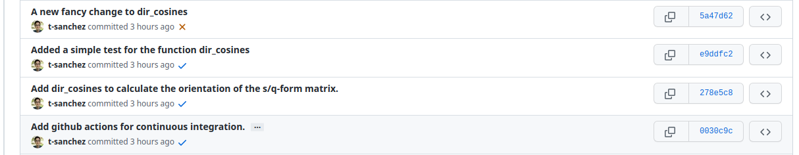
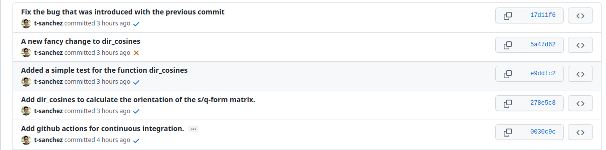

name: title layout: true class: center --- layout: false count: false .middle.center[ # CDM: Testing & CI/CD ## (part II) <br /> <br /> ### Thomas Sanchez #### UNIL CHUV - CIBM ###### [t-sanchez.github.io/CDM/20230324](https://t-sanchez.github.io/CDM/20230324) ] --- name: newsection layout: true .perma-sidebar[ <p class="rotate"> <a rel="license" href="http://creativecommons.org/licenses/by/4.0/"><img alt="Creative Commons License" style="border-width:0; height: 20px; padding-top: 6px;" src="https://i.creativecommons.org/l/by/4.0/88x31.png" /></a> <span style="padding-left: 10px; font-weight: 600;">PEP03 CDM: Testing & CI/CD</span> </p> ] --- # Intro to CDM (*Code & Data monthly*) .boxed-content[ .distribute.large[ * Loosely defined format (*unconference*) * Every four weeks, *blended* format * Volunteers needed * Comms channel - slack (https://dljcworkspace.slack.com/archives/C04N3KCRGDT) * Recording of the talks ] ] --- # Continuous Integration (CI) - Outline .boxed-content[ .distribute.large[ * What is continuous integration? * Continuous integration in action * What next? ] ] --- # CI - What is it? <p align="center"> <img src="https://www.pagerduty.com/wp-content/uploads/2020/01/continuous-integration-2.png" width="50%" /> </p> ??? Most of the time, used with a version control system like github, but it's not *<mandatory></mandatory> You can do CI without it: the point is to have the code regularly run, to prevent bugs from arising unnoticed. --- # Our project - Source code `project/src/nifti.py`: ```Python import numpy as np def voxel_sizes(xform): """Calculates the voxel sizes given the s/q-form matrix of a NIfTI file.""" return np.linalg.norm(xform[:-1, :-1], axis=1) ``` .small[ ```Python Python 3.9.12 | packaged by conda-forge | (main, Mar 24 2022, 23:25:59) [GCC 10.3.0] on linux Type "help", "copyright", "credits" or "license" for more information. >>> import numpy as np >>> from nifti import voxel_sizes >>> voxel_sizes(np.diag([1.0, 2.0, 3.0, 1.0])) array([1., 2., 3.]) >>> voxel_sizes(np.diag([2.0, -1.0, 3.0, 1.0])) array([2., 1., 3.]) ``` ] --- # Our project - Unit testing `project/test/test_nifti.py`: .small[ ```Python import numpy as np import nibabel as nb import pytest from nifti import voxel_sizes @pytest.mark.parametrize( "input_matrix,expected_sizes", [ (np.diag([1.0, 2.0, 3.0, 1.0]), [1., 2., 3.]), (np.diag([2.0, -1.0, 3.0, 1.0]), [2., 1., 3.]), (np.array([ [0.0, -1.0, 0.0, 0.0], [2.0, 0.0, 0.0, 0.0], [0.0, 0.0, 3.0, 0.0], [0.0, 0.0, 0.0, 1.0] ]), [2.0, 1.0, 3.0]), ] ) def test_voxels(input_matrix, expected_sizes): assert np.allclose(voxel_sizes(input_matrix), expected_sizes) ``` ] Running the test with 3 different input --- # Our project - Fuzzy testing `project/test/test_nifti.py`: .small[ ```Python @pytest.mark.parametrize( "expected_sizes", [[1., 2., 3.], [2., 1., 3.]], ) @pytest.mark.parametrize("testnumber", list(range(10))) @pytest.mark.parametrize("flip_y", [True, False]) def test_fuzzing(expected_sizes, testnumber, flip_y): rotmat = nb.eulerangles.euler2mat( z=np.random.uniform(-np.pi/4, np.pi/4), y=np.random.uniform(-np.pi/4, np.pi/4) + np.pi * flip_y, x=np.random.uniform(-np.pi/4, np.pi/4), ) input_matrix = np.eye(4) input_matrix[:-1, :-1] = rotmat * expected_sizes assert np.allclose(voxel_sizes(input_matrix), expected_sizes) ``` ] Running the test with 10 x 2 x 2 = 40 different input --- # Our project - Testing in action From `project/src/`: ```Shell $ python -m pytest ../test/ ================================= test session starts ================================== platform linux -- Python 3.9.12, pytest-7.1.2, pluggy-1.0.0 rootdir: /home/tsanchez/Documents/mial/repositories/cdm/CDM-code plugins: anyio-3.5.0 collected 43 items ../test/test_nifti.py ........................................... [100%] ================================== 43 passed in 0.12s ================================== ``` <br /> 3 + 40 = 43 tests passed! --- # Towards CI - Automating testing with *Github Actions* * **Git/Github: a *version control system*. ** <p align="center"> <img src="https://programmerblog.net/wp-content/uploads/2021/03/what-is-verion-control-systems-process.png " width="50%" /> </p> * Github Actions: An *event* (e.g. a `push` to a repository) will trigger an *action* (e.g. running tests). ??? * *Git* is a version control system. It track and manage changes to a software project. * *Github* is a company that offers cloud-based repository hosting. * *General idea:* a shared, online folder that tracks changes and makes code sharing easy. * Be clear about what a push is: you put the code on the remote server. <br /> --- # Towards CI - Actions in action <p align="center"> <img src="img/actions.png " width="75%" /> </p> ??? Show where it is in github. Click on the `actions` panel --- # CI - Give the instructions to Github `project/.gihtub/workflows/python.yml` .tiny[ ```Python name: cdm-code on: # trigger on pushes and PRs to main push: branches: - main pull_request: branches: - main jobs: # instructions to Github build: runs-on: ubuntu-latest steps: - uses: actions/checkout@v3 # Check out the current version of your code - name: Set up Python 3.10 # Setup the version of python to be used uses: actions/setup-python@v4 with: python-version: "3.10" - name: Install dependencies # Setup the required libraries -> nibabel, numpy, pytest run: | python -m pip install --upgrade pip python -m pip install -r requirements.txt - name: Test with pytest # Run the tests exactly like before run: | cd src # Move into the 'src' folder python -m pytest ../test/ # Execute the tests ``` ] --- # CI - The project so far <p align="center"> <img src="img/repo.png " width="20%" /> </p> Looking at `requirements.txt` ```bash # List the python packages that should be installed to run the code # You can specify a given version with e.g. `nibabel>=2.0` nibabel numpy pytest ``` ??? Should we illustrate the push? --- # CI - After *pushing* the changes <p align="center">  </p> Let's check what happened. <p align="center">  </p> --- # CI - Now what? Let's add a new function to the `project/src/nifti.py` ```Python def dir_cosines(xform): """Calculates the orientation of the s/q-form matrix of a NIfTI file.""" return xform[:-1, :-1] / voxel_sizes(xform) ``` And let us push it to the repository (more on that next time) .tiny[ ```console $ git status On branch main Your branch is up to date with 'origin/main'. Changes not staged for commit: (use "git add <file>..." to update what will be committed) (use "git restore <file>..." to discard changes in working directory) modified: src/nifti.py no changes added to commit (use "git add" and/or "git commit -a") $ git add src/nifti.py $ git commit -m "Add dir_cosines to calculate the orientation of the s/q-form matrix." [main 2ce53dc] Add dir_cosines to calculate the orientation of the s/q-form matrix. 1 file changed, 4 insertions(+) $ git push Enumerating objects: 7, done. Counting objects: 100% (7/7), done. Delta compression using up to 16 threads Compressing objects: 100% (3/3), done. Writing objects: 100% (4/4), 449 bytes | 449.00 KiB/s, done. Total 4 (delta 2), reused 0 (delta 0), pack-reused 0 remote: Resolving deltas: 100% (2/2), completed with 2 local objects. To github.com:t-sanchez/CDM-code.git 0fccde5..2ce53dc main -> main ``` ] --- # What happened on the side of Github? <p align="center">  </p> Testing was triggered and run successfully <p align="center"> </p> --- # Let's add a test for our new function. ```Python @pytest.mark.parametrize( "xform,xform_dir", [ (np.diag([1.0, 2.0, 3.0, 1.0]), np.eye(3)), (np.diag([2.0, -1.0, 3.0, 1.0]), np.eye(3)), ], ) def test_dir_cosines(xform, xform_dir): diagonal = np.diag([2.0, 3.0, 1.0, 1.0]) assert np.allclose(dir_cosines(diagonal), np.eye(3)) ``` Running tests locally from `project/src` .small[ ```console $ python -m pytest ../test/ ======================================== test session starts ======================================== platform linux -- Python 3.9.12, pytest-7.1.2, pluggy-1.0.0 rootdir: /home/tsanchez/Documents/mial/repositories/cdm/CDM-code plugins: anyio-3.5.0 collected 45 items ../test/test_nifti.py ............................................. [100%] ======================================== 45 passed in 0.11s ========================================= ``` ] --- # *Pushing*, and checking Github <p align="center">  </p> The new tests are run as expected. <p align="center"> </p> --- # Further down the line ... Keep working on the project, add new features. <p align="center">  </p> Continuous integration tests failed after our latest commit! --- # What does CI tell us? .tiny[ ```Python ../test/test_nifti.py ...........................................FF [100%] [...] =========================== short test summary info ============================ FAILED ../test/test_nifti.py::test_dir_cosines[xform0-xform_dir0] - assert False + where False = <function allclose at 0x7f007a3d9000>(array([[0., 1., 0.],\n [0., 0., 1.],\n [0., 0., 0.]]), array([[1., 0., 0.],\n [0., 1., 0.],\n [0., 0., 1.]])) + where <function allclose at 0x7f007a3d9000> = np.allclose + and array([[0., 1., 0.],\n [0., 0., 1.],\n [0., 0., 0.]]) = dir_cosines(array([[2., 0., 0., 0.],\n [0., 3., 0., 0.],\n [0., 0., 1., 0.],\n [0., 0., 0., 1.]])) + and array([[1., 0., 0.],\n [0., 1., 0.],\n [0., 0., 1.]]) = <function eye at 0x7f00779770a0>(3) + where <function eye at 0x7f00779770a0> = np.eye FAILED ../test/test_nifti.py::test_dir_cosines[xform1-xform_dir1] - assert False + where False = <function allclose at 0x7f007a3d9000>(array([[0., 1., 0.],\n [0., 0., 1.],\n [0., 0., 0.]]), array([[1., 0., 0.],\n [0., 1., 0.],\n [0., 0., 1.]])) + where <function allclose at 0x7f007a3d9000> = np.allclose + and array([[0., 1., 0.],\n [0., 0., 1.],\n [0., 0., 0.]]) = dir_cosines(array([[2., 0., 0., 0.],\n [0., 3., 0., 0.],\n [0., 0., 1., 0.],\n [0., 0., 0., 1.]])) + and array([[1., 0., 0.],\n [0., 1., 0.],\n [0., 0., 1.]]) = <function eye at 0x7f00779770a0>(3) + where <function eye at 0x7f00779770a0> = np.eye ========================= 2 failed, 43 passed in 0.22s ========================= Error: Process completed with exit code 1. ``` ] => Our latest change seems to have introduced a bug in `dir_cosines`. Let's check the code. ```Python def dir_cosines(xform): """Calculates the orientation of the s/q-form matrix of a NIfTI file.""" return xform[1:, :-1] / voxel_sizes(xform) ``` --- # Bugfixing and pushing ```Python def dir_cosines(xform): """Calculates the orientation of the s/q-form matrix of a NIfTI file.""" return xform[:-1, :-1] / voxel_sizes(xform) ``` <br /> Everything is back to normal! <p align="center">  </p> --- # Wrapping up .boxed-content[ .distribute.large[ * Continuous integration runs your tests automatically * CI works well when you `push` often! * Check [https://github.com/t-sanchez/CDM-code](https://github.com/t-sanchez/CDM-code) for the examples! ] ] --- .boxed-content[ .middle.center[ # Thanks! ### Questions? ] ]